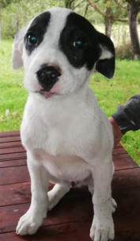
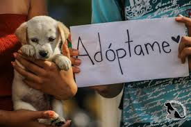
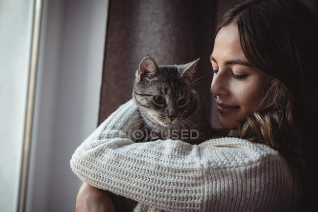
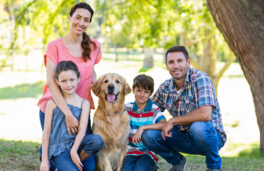
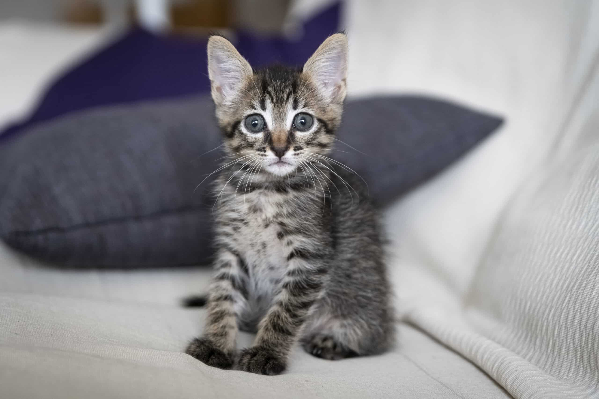
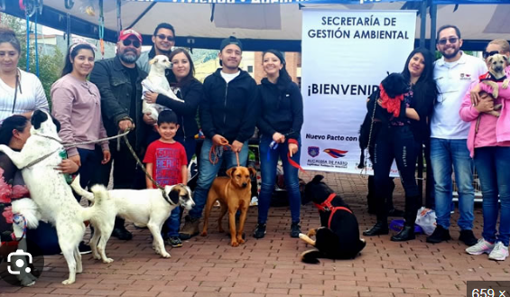
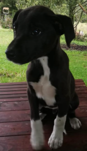
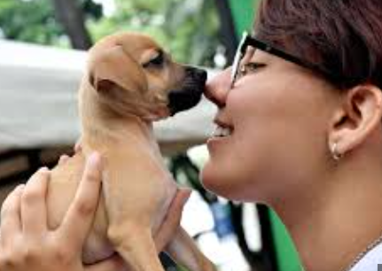

Adoptar a Luna cambió nuestra rutina por completo. Hoy no imagino la casa sin sus saltos cada mañana.
Mira el trabajo que hacemos día a día y escucha la voz de las familias que han abierto su corazón a un nuevo amigo.
Momentos reales de rescates, adopciones y eventos comunitarios.





Historias reales de quienes encontraron un nuevo miembro para su familia.

Adoptar a Luna cambió nuestra rutina por completo. Hoy no imagino la casa sin sus saltos cada mañana.

El proceso fue claro y humano. Mishi llegó tímido y hoy es el dueño absoluto del sillón. Gracias, Patitas Felices.

Toby nos enseñó lo que es amar sin condiciones. Recomiendo adoptar a cualquiera que dude: vale toda la pena del mundo.
Ya sea para adoptar, donar, ser voluntario o reportar un animal en situación de calle, estamos disponibles para ti. Tu mensaje importa.
Los campos con * son obligatorios.